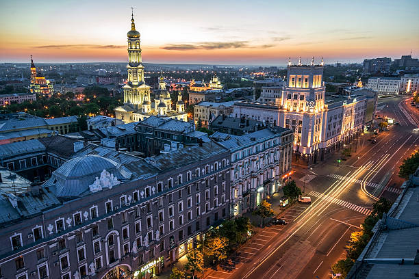
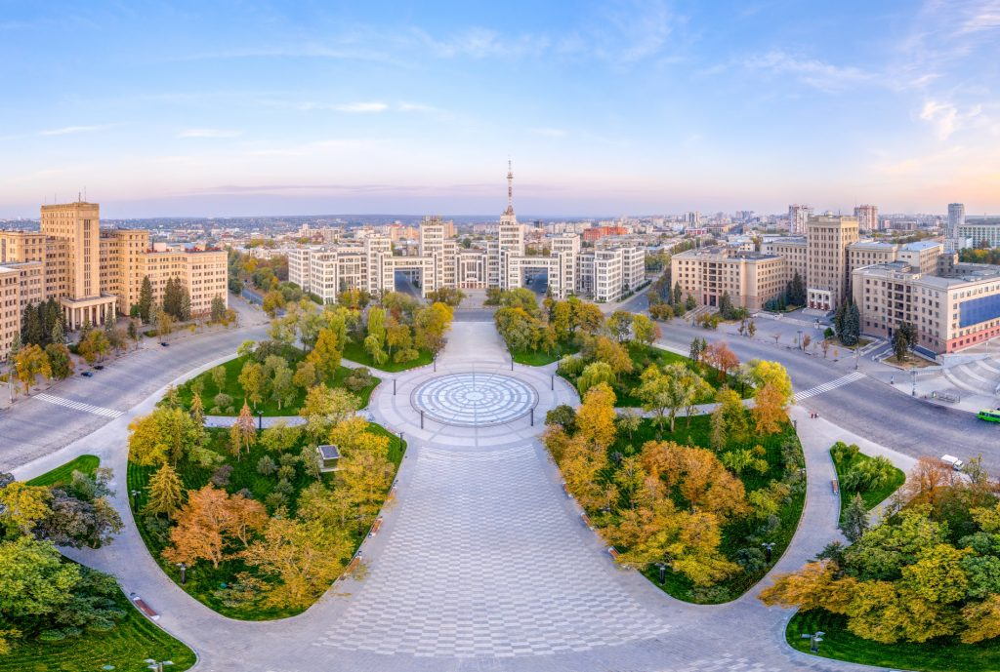

Харків — друге за чисельністю населення місто України, що розташоване на сході країни. Тут мешкає близько 1,4 мільйона людей. Площа міста становить приблизно 350 квадратних кілометрів. Харків є потужним науковим, освітнім, промисловим і культурним центром України.
Місто відоме своїми широкими проспектами, просторими площами та численними зеленими зонами. Тут розташована одна з найбільших площ у Європі — площа Свободи. Серед улюблених місць для прогулянок — парк Горького, де можна відпочити, покататися на атракціонах і насолодитися природою.
Харків часто називають містом студентів — у ньому налічується понад 30 університетів і академій, зокрема всесвітньо відомі Харківський політехнічний інститут і університет імені Каразіна. Також тут активно розвиваються наукові установи, промисловість та ІТ-сфера.
Харків гармонійно поєднує історичну архітектуру й сучасні споруди, затишні вулички та динамічне міське життя. Це місто, яке вистояло перед труднощами й зберегло свій характер, енергію та гостинність.

